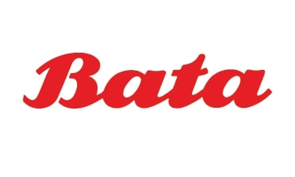

Welcome to Bata Shoe Company
History of Bata

The Bata Corporation (known as Bata, and in the Czech Republic and Slovakia, known as Baťa, IPA: [ˈbaca]) is a multinational footwear, apparel and fashion accessories manufacturer and retailer of Moravian (Czech) origin, headquartered in Lausanne, Switzerland.
The corporation is one of the world's leading shoemakers by volume with 150 million pairs of shoes sold annually.[5] It has a retail presence of over 5,300 shops in more than 70 countries across five continents and 21 production facilities in 18 countries. Bata is an employer to over 32,000 people globally.
A family-owned business for over 125 years, the company is organized into three business units: Bata, Bata Industrials (safety shoes) and AW Lab (sports style). Bata is a portfolio company with more than 20 brands and labels, such as Bata, North Star, Power, Bubblegummers,sprint, Weinbrenner, Sandak, and Toughees.